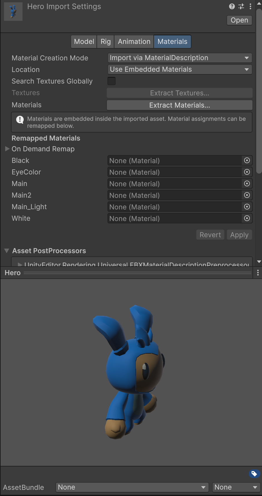
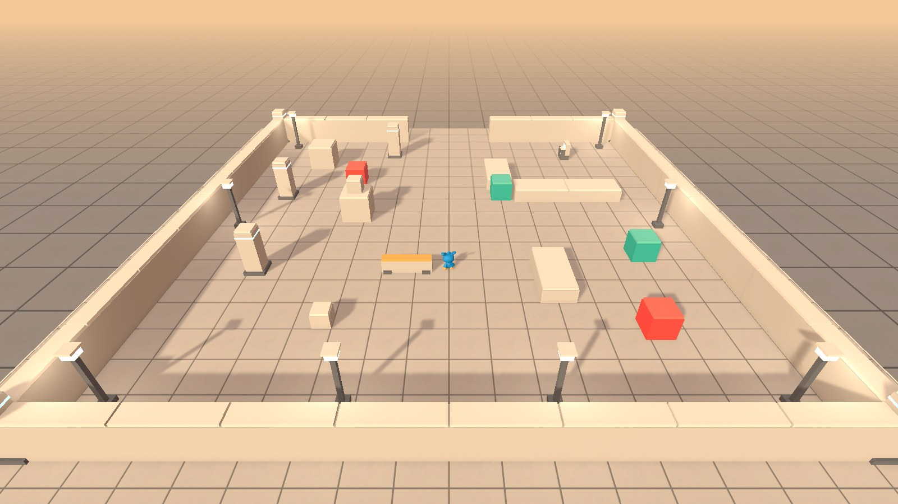

GOLD RUSH · Phase 4
Player and camera
You build the hero's Animator Controller by hand (idle, walk, run and four action animations), make a Player prefab you control with the keyboard, and add a third-person camera that you turn with the mouse. The camera slides closer when a wall is in the way. At the end, PLAY in the menu lets you run around Level1.
1What you need
- Phase 3 is finished:
Level1has the yard, the markers (withPlayerSpawnat0, 0, -9) and the overview Main Camera, and it is in the Scene List afterMainMenu. (Or importGoldRush_Phase03_Level.unitypackage. A package does not bring the Scene List, so then also do Phase 3, step 17.) - The hero model
Assets/GoldRush/Art/Characters/Hero/Hero.fbx(starter package). - Active Input Handling = Both (Phase 0). The scripts read the keyboard and mouse with the classic
Inputclass.
Open Assets/GoldRush/Scenes/Level1.unity.
2Check the hero import settings
An FBX file holds the 3D model, its skeleton (the "rig") and its animations (clips). The starter package already has the right settings. Check them, and fix anything that is different.
- In the Project window, click
Art/Characters/Hero/Hero.fbx. - Model tab: Import Cameras and Import Lights are off.
- Rig tab: Animation Type = Generic, Avatar Definition = Create From This Model.
- Animation tab: Import Animation is on. Check the 7 clips from the table (names and loop boxes).
- Materials tab: Import via MaterialDescription, Use Embedded Materials.
- If you changed something, click Apply.
| Clip | Used for | Loop Time + Loop Pose |
|---|---|---|
Idle, Walk, Run | standing, walking, sprinting | on |
Wave | Win (waves a few times) | on |
Punch, HitReact, Death | Attack, Hit, Die (play once) | off |
CharacterArmature|, delete that part, so the name is only Idle, Walk…
3The Hero Animator Controller
An Animator Controller decides which clip plays. Scripts talk to it with parameters: a number (Float) or a one-time signal (Trigger).
- Open
Assets/GoldRush/Animations. You already have theHerocontroller from Phase 1 (with theWintrigger and the statesIdleandWin). Use that one and add only what is missing. Do not make a second one: the menu hero uses it too. - Otherwise: right-click → Create → Animation → Animator Controller. Name it
Hero. - Double-click
Hero. The Animator window opens. - Open the Parameters tab on the left. Click + and add the parameters of this table that are missing (
Winis already there, so you add 4). The names must be exactly like this:
| Name | Type | Meaning |
|---|---|---|
Speed | Float | 0 = idle, 0.5 = walk, 1 = run |
Attack | Trigger | punch |
Hit | Trigger | a monster hit the hero |
Win | Trigger | level finished (the menu hero also waves with it) |
Die | Trigger | caught, game over |
speed, or Hit with a space) means "nothing happens". The monsters in Phase 7 use the same 5 names.4The Locomotion blend tree
A blend tree mixes clips by a number. With Speed = 0 the hero stands, with 0.5 he walks, with 1 he runs. Values in between mix two clips smoothly.
- In the Animator window, right-click the grid → Create State → From New Blend Tree.
- Rename the state
Locomotion. It must be orange (the default state). If not: right-click it → Set as Layer Default State. - Double-click
Locomotion. Click the Blend Tree node. - Inspector: Blend Type = 1D, Parameter =
Speed. - Under Motion, click + → Add Motion Field three times. Untick Automate Thresholds.
- Fill the rows from the table. Drag each clip from
Hero.fbx(click its small arrow to see the clips). - Click Base Layer at the top of the Animator window to go back.
- Now delete the old
Idlestate from Phase 1: click it and press Delete.Locomotionplays the idle clip now. Check thatLocomotionis orange.
| Row | Motion | Threshold |
|---|---|---|
| 1 | Idle | 0 |
| 2 | Walk | 0.5 |
| 3 | Run | 1 |
5The action states
One state for each trigger. You use them later (Win in Phase 6, Hit and Die in Phase 7), but you can test them today.
- Right-click the grid → Create State → Empty.
- In the Inspector, type a name from the table and drag its clip into Motion.
- Repeat for all four.
| State | Motion (clip) |
|---|---|
Attack | Punch |
Hit | HitReact |
Win | Wave |
Die | Death |
6The transitions
A transition is an arrow from one state to another. Any State means "from wherever you are now".
- Right-click Any State → Make Transition → click
Attack. - Click the arrow. Untick Has Exit Time. Open Settings: Transition Duration
0.1, untick Can Transition To Self. Under Conditions, click + →Attack. - Do the same for
HitandDie, each with its own trigger.Winalready has this arrow from Phase 1: click it and check the same values. - Right-click
Attack→ Make Transition → clickLocomotion. Keep Has Exit Time on. Set the values from the table. No conditions. - Do the same for
HitandWin. (The old arrowWin → Idlefrom Phase 1 went away with theIdlestate. If you still see it, delete it.)Diegets no way back: the hero stays down.
| Arrow | Has Exit Time | Exit Time | Duration | Condition |
|---|---|---|---|---|
| Any State → Attack / Hit / Win / Die | off | – | 0.1 | its trigger |
| Attack → Locomotion | on | 0.85 | 0.2 | none |
| Hit → Locomotion | on | 0.85 | 0.2 | none |
| Win → Locomotion | on | 3 | 0.2 | none |
Exit Time 0.85 = leave when the clip is 85 % done. Exit Time 3 = the wave loops, so the hero waves 3 times, then goes back to idle.
7Two stub scripts
On phones, the hero moves with a touch joystick and the camera turns with a drag. That comes in a later phase. But the player and camera scripts already ask for them, so you add two tiny stubs now: placeholder classes that compile and always say "no finger on the screen".
- In
Assets/GoldRush/Scripts/UI: right-click → Create → Scripting → MonoBehaviour Script. Name itVirtualJoystick. Replace everything with this code. Save.
using UnityEngine;
namespace GoldRush
{
/// <summary>
/// PHASE 4 STUB. The real touch joystick comes in a later phase (touch controls).
/// For now it only has the two values PlayerMotor reads, and they are always "no touch".
/// </summary>
public class VirtualJoystick : MonoBehaviour
{
public Vector2 Value { get; private set; }
/// <summary>True while a finger is on the stick.</summary>
public bool Held => false;
}
}- Make a second script in the same folder:
TouchLookArea. Replace everything with this code. Save.
using UnityEngine;
namespace GoldRush
{
/// <summary>
/// PHASE 4 STUB. The real touch look area (drag on the right half of the screen) comes in a later phase.
/// For now it never has any drag to give.
/// </summary>
public class TouchLookArea : MonoBehaviour
{
/// <summary>Returns and clears the drag delta (screen pixels) since the last call.</summary>
public static Vector2 Consume() => Vector2.zero;
}
}namespace GoldRush: all game scripts live in this "family name", so they can find each other.Value(the stick direction) is always(0, 0), andConsume()always returns(0, 0)= no drag.static: the camera callsTouchLookArea.Consume()without any object in the scene.- A later phase says "replace the whole file". Then the real touch controls take their place, and the other scripts do not change.
8Script: PlayerMotor
This script moves the hero. Create Assets/GoldRush/Scripts/Gameplay/PlayerMotor.cs the same way and paste this Phase 4 version. Later phases replace it with bigger versions.
using UnityEngine;
namespace GoldRush
{
/// <summary>Third-person player: CharacterController movement (collides with props), sprint/stamina,
/// walk/run animation.
/// PHASE 4 VERSION: later phases add power-ups, hits, sounds, dust and win/lose poses.</summary>
[RequireComponent(typeof(CharacterController))]
public class PlayerMotor : MonoBehaviour
{
public float walkSpeed = 5f;
public float sprintSpeed = 8.2f;
public float acceleration = 20f;
public float turnSpeed = 560f;
[Header("Animation (PHASE 4 ONLY)")]
[Tooltip("Ground speed (m/s) the Walk clip was animated for (measured from the feet).")]
public float clipWalkSpeed = 0.59f;
[Tooltip("Ground speed (m/s) the Run clip was animated for (measured from the feet).")]
public float clipRunSpeed = 0.84f;
public VirtualJoystick joystick;
public ThirdPersonCamera cam;
public float Stamina { get; private set; } = 1f;
public bool Exhausted { get; private set; }
public bool Sprinting { get; private set; }
public bool Frozen { get; set; }
public Vector3 Velocity => velocity;
public Animator Anim => anim;
CharacterController cc;
float animSpeed = 1f;
Animator anim;
Vector3 velocity;
float vy;
void Awake()
{
cc = GetComponent<CharacterController>();
// a Player placed in the scene by hand: find its model (the child with the Animator)
if (!anim) anim = GetComponentInChildren<Animator>();
}
/// <summary>Moves the player (a CharacterController ignores teleports while it is enabled).</summary>
public void Teleport(Vector3 pos, float yaw)
{
if (!cc) cc = GetComponent<CharacterController>();
if (cc) cc.enabled = false;
transform.SetPositionAndRotation(pos, Quaternion.Euler(0, yaw, 0));
if (cc) cc.enabled = true;
}
Vector2 ReadInput()
{
Vector2 v = joystick ? joystick.Value : Vector2.zero;
float kx = (Input.GetKey(KeyCode.D) || Input.GetKey(KeyCode.RightArrow) ? 1 : 0) - (Input.GetKey(KeyCode.A) || Input.GetKey(KeyCode.LeftArrow) ? 1 : 0);
float ky = (Input.GetKey(KeyCode.W) || Input.GetKey(KeyCode.UpArrow) ? 1 : 0) - (Input.GetKey(KeyCode.S) || Input.GetKey(KeyCode.DownArrow) ? 1 : 0);
if (kx != 0 || ky != 0) v = new Vector2(kx, ky).normalized;
return Vector2.ClampMagnitude(v, 1f);
}
void Update()
{
float dt = Time.deltaTime;
if (dt <= 0f) return;
bool canMove = !Frozen; // PHASE 4: later also "the GameManager says we are playing"
Vector2 input = canMove ? ReadInput() : Vector2.zero;
float yaw = cam ? cam.Yaw : 0f;
Vector3 dir = Quaternion.Euler(0, yaw, 0) * new Vector3(input.x, 0, input.y);
float mag = Mathf.Clamp01(dir.magnitude);
bool wantSprint = canMove && mag > 0.2f && ((joystick && joystick.Held && joystick.Value.magnitude > 0.9f) || Input.GetKey(KeyCode.LeftShift) || Input.GetKey(KeyCode.RightShift));
if (Exhausted && Stamina > 0.35f) Exhausted = false;
Sprinting = wantSprint && !Exhausted && Stamina > 0f;
if (Sprinting)
{
Stamina = Mathf.Max(0f, Stamina - dt * 0.3f);
if (Stamina <= 0f) Exhausted = true;
}
else Stamina = Mathf.Min(1f, Stamina + dt * (mag > 0.1f ? 0.18f : 0.32f));
float speed = Sprinting ? sprintSpeed : walkSpeed;
Vector3 targetVel = mag > 0.01f ? dir.normalized * (mag * speed) : Vector3.zero;
velocity = Vector3.MoveTowards(velocity, targetVel, acceleration * dt);
if (velocity.sqrMagnitude > 0.05f && !Frozen)
{
var targetRot = Quaternion.LookRotation(new Vector3(velocity.x, 0, velocity.z));
transform.rotation = Quaternion.RotateTowards(transform.rotation, targetRot, turnSpeed * dt);
}
if (cc.isGrounded && vy < 0) vy = -2f; else vy -= 25f * dt;
if (cc.enabled) cc.Move((velocity + Vector3.up * vy) * dt);
// animation (0 idle, 0.5 walk, 1 run)
float horiz = new Vector3(velocity.x, 0, velocity.z).magnitude;
float blend = horiz < 0.1f ? 0f : Mathf.Lerp(0.45f, 1f, Mathf.InverseLerp(2.5f, sprintSpeed, horiz));
if (anim && anim.runtimeAnimatorController) anim.SetFloat("Speed", blend, 0.15f, dt);
// play the walk/run cycle as fast as the hero moves, so the feet don't slide
if (anim && !Frozen)
{
float target = PlaybackSpeed(blend, horiz);
animSpeed = Mathf.Lerp(animSpeed, target, 1f - Mathf.Exp(-5f * dt)); // ease, never jump
anim.speed = animSpeed;
}
}
/// <summary>Animation playback speed so the feet match the ground.
/// blend = Animator "Speed" value (0.5 walk .. 1 run), groundSpeed = how fast the hero really moves.</summary>
float PlaybackSpeed(float blend, float groundSpeed)
{
if (groundSpeed < 0.15f) return 1f;
float natural = Mathf.Lerp(clipWalkSpeed, clipRunSpeed, Mathf.InverseLerp(0.5f, 1f, blend));
float ratio = groundSpeed / Mathf.Max(0.1f, natural);
// match most of the stride but keep it gentle: fluid motion matters more than perfect feet
return Mathf.Clamp(Mathf.Lerp(1f, ratio, 0.7f), 0.8f, 2.2f);
}
}
}[RequireComponent(typeof(CharacterController))]: Unity adds a CharacterController if it is missing. A CharacterController is a capsule that moves withcc.Move()and stops at walls, without real physics.ReadInput()reads WASD or the arrow keys..normalizedmakes diagonal moves as fast as straight ones.float yaw = cam ? cam.Yaw : 0f;turns the keys by the camera's angle, so W always runs "into the screen".- Sprint: hold Shift → speed goes from
5to8.2m/s. Sprinting uses stamina (1 = full). At 0 the hero is exhausted and walks until stamina is back above 0.35. MoveTowardsspeeds up and slows down smoothly (20 m/s²).RotateTowardsturns the hero toward where he runs (560° per second).vyis the falling speed (gravity 25 m/s²).- Animation:
anim.SetFloat("Speed", blend, 0.15f, dt)feeds the blend tree.PlaybackSpeed()plays the cycle faster when the hero moves faster, so the feet do not slide.
The type or namespace name 'ThirdPersonCamera' could not be found. That is normal: PlayerMotor uses the camera script of the next step. It goes away when you finish step 9.9Script: ThirdPersonCamera
Create Assets/GoldRush/Scripts/Gameplay/ThirdPersonCamera.cs and paste this Phase 4 version.
using UnityEngine;
namespace GoldRush
{
/// <summary>Smooth orbit camera: mouse / right-mouse / Q-E to rotate, wall collision, shake.
/// PHASE 4 VERSION: a later phase adds the intro swoop, and the GameManager takes over the mouse cursor.</summary>
public class ThirdPersonCamera : MonoBehaviour
{
public Transform target;
public float distance = 6.2f;
public float height = 1.15f;
public float minPitch = 4f, maxPitch = 62f;
public float touchSensitivity = 0.16f; // degrees per reference pixel (1920 wide)
[Tooltip("Mouse look speed on computers (cursor is locked while playing).")]
public float mouseSensitivity = 2.4f;
public float yaw, pitch = 20f;
/// <summary>Smoothed yaw the camera is actually using (movement is relative to this).</summary>
public float Yaw => curYaw;
Vector3 focus, focusVel;
float curDist, distVel, targetDist;
float curYaw, curPitch, yawVel, pitchVel;
float shakeAmp, shakeTime, shakeDur;
/// <summary>Starts following a target from behind (also used for a camera placed in the scene).</summary>
public void Init(Transform newTarget, float startYaw)
{
target = newTarget;
yaw = startYaw;
focus = target.position + Vector3.up * height;
curDist = targetDist = distance;
curYaw = yaw;
curPitch = pitch;
Snap();
}
void Start()
{
// a camera placed in the scene with a Target set, that nobody initialised yet
if (target && curDist <= 0f) Init(target, target.eulerAngles.y);
LockCursor(true); // PHASE 4 ONLY
}
public void Shake(float amplitude, float duration)
{
shakeAmp = Mathf.Max(shakeAmp * (shakeTime / Mathf.Max(0.01f, shakeDur)), amplitude);
shakeDur = shakeTime = duration;
}
void Snap()
{
var rot = Quaternion.Euler(curPitch, curYaw, 0);
transform.SetPositionAndRotation(focus + rot * Vector3.back * curDist, rot);
}
// ---- PHASE 4 ONLY: the mouse cursor. From the GameManager phase on, GameManager does this.
static bool UseMouseLook => !Application.isMobilePlatform && !Input.touchSupported;
static void LockCursor(bool locked)
{
if (!UseMouseLook) return;
Cursor.lockState = locked ? CursorLockMode.Locked : CursorLockMode.None;
Cursor.visible = !locked;
}
void Update()
{
if (Input.GetKeyDown(KeyCode.Escape)) LockCursor(false);
// clicked back into the game window after the cursor was freed
else if (UseMouseLook && Cursor.lockState != CursorLockMode.Locked && Input.GetMouseButtonDown(0)) LockCursor(true);
}
void OnDestroy() { LockCursor(false); }
// ---- end of PHASE 4 ONLY
void LateUpdate()
{
if (!target) return;
float dt = Time.deltaTime;
// ---- input changes the TARGET angles (yaw / pitch); the camera eases toward them
if (Time.timeScale > 0f)
{
Vector2 look = TouchLookArea.Consume() * (1920f / Mathf.Max(1, Screen.width));
yaw += look.x * touchSensitivity;
pitch -= look.y * touchSensitivity * 0.8f;
// computer: mouse look while the cursor is locked (like a PC 3D game);
// right-drag still works when the cursor is free
if (Cursor.lockState == CursorLockMode.Locked || Input.GetMouseButton(1))
{
yaw += Input.GetAxis("Mouse X") * mouseSensitivity;
pitch -= Input.GetAxis("Mouse Y") * mouseSensitivity * 0.8f;
}
if (Input.GetKey(KeyCode.Q)) yaw -= 110f * dt;
if (Input.GetKey(KeyCode.E)) yaw += 110f * dt;
distance = Mathf.Clamp(distance - Input.mouseScrollDelta.y * 0.5f, 4f, 11f);
}
else TouchLookArea.Consume();
pitch = Mathf.Clamp(pitch, minPitch, maxPitch);
if (dt > 0f)
{
curYaw = Mathf.SmoothDampAngle(curYaw, yaw, ref yawVel, 0.09f, Mathf.Infinity, dt);
curPitch = Mathf.SmoothDamp(curPitch, pitch, ref pitchVel, 0.09f, Mathf.Infinity, dt);
}
// ---- follow point: slightly behind the hero, leading a little in the running direction
Vector3 lead = Vector3.zero;
var motor = target.GetComponent<PlayerMotor>();
if (motor) { lead = motor.Velocity * 0.12f; lead.y = 0f; }
Vector3 want = target.position + Vector3.up * height + lead;
if (dt > 0f) focus = Vector3.SmoothDamp(focus, want, ref focusVel, 0.12f, Mathf.Infinity, dt);
float p = curPitch, d = distance;
Quaternion rot = Quaternion.Euler(p, curYaw, 0);
Vector3 dir = rot * Vector3.back;
// ---- wall avoidance: several rays (centre + 4 corners of the view), take the nearest hit.
// Small changes are ignored (no flicker) and the camera glides in/out instead of snapping.
float allowed = d;
Vector3 right = rot * Vector3.right, up = rot * Vector3.up;
if (Physics.SphereCast(focus, 0.22f, dir, out var hit, d, Physics.DefaultRaycastLayers, QueryTriggerInteraction.Ignore))
allowed = Mathf.Min(allowed, hit.distance);
for (int i = 0; i < 4; i++)
{
Vector3 off = (i < 2 ? right : up) * (i % 2 == 0 ? 0.35f : -0.35f);
if (Physics.Raycast(focus + off, dir, out var h2, d, Physics.DefaultRaycastLayers, QueryTriggerInteraction.Ignore))
allowed = Mathf.Min(allowed, h2.distance);
}
// also make sure nothing hides the hero's body (low walls between hero and camera)
Vector3 camGuess = focus + dir * d;
Vector3 body = target.position + Vector3.up * 0.6f;
Vector3 toCam = camGuess - body;
if (Physics.Raycast(body, toCam.normalized, out var h3, toCam.magnitude, Physics.DefaultRaycastLayers, QueryTriggerInteraction.Ignore))
{
// distance along the camera ray that corresponds to the blocking point
float frac = h3.distance / Mathf.Max(0.01f, toCam.magnitude);
allowed = Mathf.Min(allowed, d * frac);
}
allowed = Mathf.Max(1.4f, allowed - 0.25f);
if (allowed < targetDist - 0.05f || allowed > targetDist + 0.35f) targetDist = allowed; // hysteresis
bool pullingIn = targetDist < curDist;
if (dt > 0f) curDist = Mathf.SmoothDamp(curDist, targetDist, ref distVel, pullingIn ? 0.1f : 0.45f, Mathf.Infinity, dt);
curDist = Mathf.Min(curDist, allowed + 0.6f); // never sink deep inside a wall
Vector3 pos = focus + dir * curDist;
if (shakeTime > 0f)
{
shakeTime -= Time.unscaledDeltaTime;
float k = Mathf.Clamp01(shakeTime / shakeDur);
float t = Time.unscaledTime * 40f;
pos += (transform.right * (Mathf.PerlinNoise(t, 0.3f) - 0.5f) + transform.up * (Mathf.PerlinNoise(0.7f, t) - 0.5f)) * (2f * shakeAmp * k);
}
transform.SetPositionAndRotation(pos, rot);
}
}
}- Orbit: the camera sits on an invisible ball around a point
1.15m above the hero's feet. Yaw = left/right angle, pitch = up/down angle (4°to62°), distance =6.2m. Start()→Init()puts the camera right behind the hero at once (Snap()). Without it, the camera would fly in from the middle of the world.- Mouse look:
Input.GetAxis("Mouse X")is how far the mouse moved this frame. The mouse turns the target angles, andSmoothDampAngleeases the camera toward them in about 0.09 s. - The cursor (Phase 4 only):
Cursor.lockState = Lockedkeeps the mouse in the middle of the window and hides it. Esc frees it, a left click locks it again. From Phase 5 on, the GameManager does this job. - Walls: one thick ray (
SphereCast) plus 4 thin rays from the hero toward the camera. If a ray hits a wall, the camera comes closer (never nearer than1.4m). It pulls in fast and glides out slowly. LateUpdateruns after allUpdates: the hero has already moved this frame, so the camera never lags behind.Shake()is used later, when a monster hits you.
10Script: PlayerSpawn
- Create
Assets/GoldRush/Scripts/Level/PlayerSpawn.csand paste:
using UnityEngine;
namespace GoldRush
{
/// <summary>Where the hero starts. The blue arrow shows which way the hero (and camera) faces.</summary>
public class PlayerSpawn : MonoBehaviour
{
void OnDrawGizmos()
{
Gizmos.color = new Color(0.25f, 0.6f, 1f);
Gizmos.DrawWireSphere(transform.position + Vector3.up * 0.7f, 0.5f);
Gizmos.DrawLine(transform.position + Vector3.up * 0.1f, transform.position + Vector3.up * 0.1f + transform.forward * 2f);
Gizmos.DrawSphere(transform.position + Vector3.up * 0.1f + transform.forward * 2f, 0.15f);
}
}
}- Select the
PlayerSpawnmarker (Level 1 - Training Yard/Gameplay/PlayerSpawn) → Add Component →PlayerSpawn.
OnDrawGizmos draws only in the Scene view: a blue ball and an arrow that shows the way the hero will face. From Phase 5 on, the GameManager moves the Player to this marker when the level starts.
11Create the Player object
- GameObject → Create Empty (at the top of the Hierarchy, not inside the level). Name it
Player. - Position
0, 0, -9(the same asPlayerSpawn), Rotation0, 0, 0, Scale1, 1, 1. - Add Component → Character Controller. Type the values from the table.
- At the top of the Inspector, set Layer = Ignore Raycast.
| Character Controller | Value |
|---|---|
| Slope Limit / Step Offset / Skin Width | 50 / 0.35 / 0.05 |
| Center | 0, 0.695, 0 |
| Radius / Height | 0.36 / 1.35 |
- Height 1.35: the hero is 1.35 m tall. Center Y 0.695 = half the height + 0.02, so the bottom of the capsule is at the feet.
- Ignore Raycast: the camera's wall rays fly through the player and only hit walls and blocks.
12Add the hero model
- Drag
Hero.fbxfrom the Project window ontoPlayerin the Hierarchy. Rename the childModel. - Transform of
Model: Position0, 0.068, 0(the feet of the model are a little below its pivot), Rotation0, 0, 0, Scale0.337, 0.337, 0.337(the same as in the menu: the hero is 1.35 m tall). - In the Scene view, the hero must fit inside the green capsule: feet at the bottom, head at the top. If not, change the Scale a little (same number in X, Y, Z).
- On the Animator of
Model: Controller =Hero, Apply Root Motion off, Culling Mode = Always Animate.
13Add PlayerMotor and save the prefab
- Select
Player→ Add Component →PlayerMotor. Keep the default values (Walk Speed5, Sprint Speed8.2, Acceleration20, Turn Speed560, Clip Walk/Run Speed0.59/0.84). Leave Joystick and Cam empty for now. - Set the Layer of
Playerto Ignore Raycast again and click Yes, change children. NowModelis on that layer too. - Drag
Playerfrom the Hierarchy intoAssets/GoldRush/Prefabs/Gameplay. Its name turns blue: it is a prefab now.
14Set up the camera
- Select
Main Camera. Its Tag must be MainCamera. It has an Audio Listener (the "ears" of the game). - Camera component: Field of View
55, Clipping Planes Near0.1, Far400. - Add Component →
ThirdPersonCamera. DragPlayerfrom the Hierarchy into Target. - Keep the default values: Distance
6.2, Height1.15, Min/Max Pitch4/62, Touch Sensitivity0.16, Mouse Sensitivity2.4, Yaw0, Pitch20.
The Position and Rotation from Phase 3 do not matter any more. The script places the camera when you press Play.
15Connect the player to the camera
- Select
Playerin the Hierarchy. - In PlayerMotor, drag
Main Camerainto Cam. - Save the scene.
16▶ Press Play
- Open the
MainMenuscene, press ▶ Play, and click PLAY in the menu. (To test faster, you can also press Play in Level1.) - Click once in the Game view. The cursor hides.
| Key / mouse | Does |
|---|---|
| W A S D or arrows | move (relative to the camera) |
| Shift | sprint |
| Move the mouse | look around |
| Esc / left click | free the cursor / lock it again |
| Hold right mouse button + drag | look around while the cursor is free |
| Q / E, mouse wheel | turn the camera left / right, zoom |
You should see:
- The camera starts right behind the hero. The hero stands on the floor and plays Idle.
- W runs into the screen, wherever the camera looks. He turns smoothly and plays Walk. With Shift he is faster and plays Run. After about 3 seconds of sprinting he gets tired and walks.
- He stops at walls and blocks. Turn the camera into a wall: it slides closer and you never see through the wall.
- Open Window → Animation → Animator and select
Player/Model. Click the small circle next toWin: he waves 3 times.Die: he falls and stays down. - No red errors in the Console.
Press Play: you should be able to run around Level1, from the menu's PLAY button.


17Common problems
| Problem | Fix |
|---|---|
| The hero stands in a "T" pose and never moves his arms and legs. | The Animator on Model has no Controller. Drag Hero into it. |
| The hero slides, but always plays Idle. | The parameter is not called exactly Speed (step 3), or the blend tree Parameter is not Speed (step 4). |
| Walk or run plays once and then freezes. | Loop Time is off for that clip (step 2). Tick it and click Apply. |
| The hero runs when he should walk. | Automate Thresholds is still on, or the thresholds are not 0 / 0.5 / 1. |
| The hero walks away from his capsule. | Untick Apply Root Motion on the Animator. |
| The hero floats or sinks, or is tiny or giant. | Model Position 0, 0.068, 0, Scale 0.337. Change the Scale of Model (not of Player) only if he does not fit the capsule. |
| After Win / Hit the hero stays in that animation. | The arrow back to Locomotion is missing, or Has Exit Time is off on it. |
| The camera does not move at all. | Target on ThirdPersonCamera is empty. Drag Player into it. |
| The camera is very close all the time, or jumps in and out. | Player and Model must be on Ignore Raycast (step 13). |
| W always runs the same way, not where the camera looks. | Cam on PlayerMotor is empty (step 15). |
| The mouse does not turn the camera, or the cursor never hides. | Click inside the Game view. On a touch-screen computer mouse look stays off: use right-drag or Q/E. |
| Nothing happens when I press keys. | Click inside the Game view. Check that PlayerMotor is on Player and ticked. |
| "The type or namespace name 'VirtualJoystick' / 'TouchLookArea' could not be found" | Do step 7. The file names must match the class names, with namespace GoldRush. |
| "You are trying to read Input using the UnityEngine.Input class…" | Edit → Project Settings → Player → Active Input Handling = Both. |
| The hero is pink. | Materials tab of Hero.fbx: Import via MaterialDescription, Use Embedded Materials, Apply. |
| The camera shakes a little when the hero runs. | Only one ThirdPersonCamera, and the camera must not be a child of Player. |
More fixes are on the Troubleshooting page. New words are in the Glossary.
Checkpoint package: GoldRush_Phase04_Player.unitypackage
Next: in Phase 5 you add the coins and the GameManager that counts them.